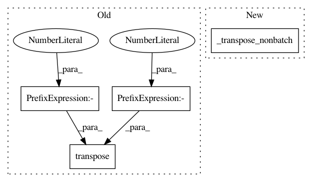

f01591a685be78db2c440e8024895601017a5b72,gpytorch/lazy/matmul_lazy_variable.py,MatmulLazyVariable,_transpose_nonbatch,#MatmulLazyVariable#,52
Before Change
return torch.Size((self.lhs.size()[0], self.lhs.size()[0]))
def _transpose_nonbatch(self):
return MatmulLazyVariable(self.rhs.transpose(-1, -2), self.lhs.transpose(-1, -2))
def _batch_get_indices(self, batch_indices, left_indices, right_indices):
outer_size = batch_indices.size(0)
After Change
return torch.Size((self.lhs.size(0), self.rhs.size(1)))
def _transpose_nonbatch(self, *args):
return self.__class__(self.rhs._transpose_nonbatch(), self.lhs._transpose_nonbatch())
def _batch_get_indices(self, batch_indices, left_indices, right_indices):
outer_size = batch_indices.size(0)
In pattern: SUPERPATTERN
Frequency: 4
Non-data size: 4
Instances
Project Name: cornellius-gp/gpytorch
Commit Name: f01591a685be78db2c440e8024895601017a5b72
Time: 2018-01-24
Author: gpleiss@gmail.com
File Name: gpytorch/lazy/matmul_lazy_variable.py
Class Name: MatmulLazyVariable
Method Name: _transpose_nonbatch
Project Name: cornellius-gp/gpytorch
Commit Name: e83dcef71990a4a6f0e7c7d6268b55096109c277
Time: 2020-07-17
Author: balandat@fb.com
File Name: gpytorch/lazy/chol_lazy_tensor.py
Class Name: CholLazyTensor
Method Name: evaluate
Project Name: cornellius-gp/gpytorch
Commit Name: e83dcef71990a4a6f0e7c7d6268b55096109c277
Time: 2020-07-17
Author: balandat@fb.com
File Name: gpytorch/lazy/chol_lazy_tensor.py
Class Name: CholLazyTensor
Method Name: root_inv_decomposition
Project Name: cornellius-gp/gpytorch
Commit Name: e83dcef71990a4a6f0e7c7d6268b55096109c277
Time: 2020-07-17
Author: balandat@fb.com
File Name: gpytorch/lazy/chol_lazy_tensor.py
Class Name: CholLazyTensor
Method Name: _cholesky